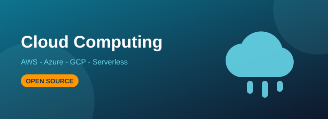
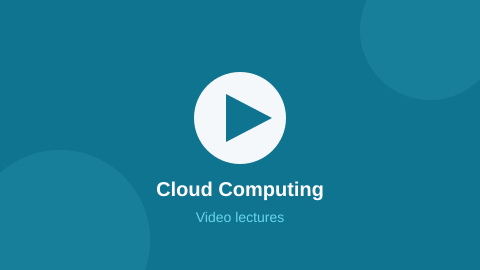

Cloud Computing
Virtualisation, AWS, Azure and GCP core services, serverless and cloud security.
Course Information
| Level | Beginner to Intermediate |
|---|---|
| Duration | 12 weeks |
| Credits | 3 |
| Pre-requisite | Basic networking and Linux. Can be taken along with the DevOps track. |
| Material | Open source — every module links to its original tutorial |
About This Track
Cloud computing is renting computers, storage and networks instead of buying them. This track covers the service models first, then takes AWS as the main platform and shows the same ideas again in Azure and GCP so you are not locked to one vendor.
Concept notes follow the GeeksforGeeks cloud computing series and the NPTEL cloud computing lectures. All labs run inside the free tiers the cloud providers already publish — AWS Free Tier, Microsoft Learn sandboxes and Google Cloud Skills Boost.
What You Will Learn
- Explain IaaS, PaaS and SaaS with real examples, and the public/private/hybrid models
- Understand virtualisation, hypervisors and how containers differ from virtual machines
- Launch and secure an EC2 instance, store files in S3 and design a VPC
- Write IAM policies that follow the least privilege rule
- Build a serverless API with Lambda and API Gateway
- Estimate cloud cost and apply the shared responsibility security model
Syllabus
| # | Module | Topics Covered | Weeks | Study Material |
|---|---|---|---|---|
| 1 | Cloud Fundamentals | IaaS/PaaS/SaaS, deployment models, elasticity, availability zones, SLA | 2 | GfG Cloud Computing |
| 2 | Virtualisation | Hypervisors type 1 and 2, VM vs container, hardware abstraction | 1 | GfG Virtualisation |
| 3 | AWS Core Services | EC2, S3, EBS, VPC, subnets, security groups, IAM, RDS, CloudWatch | 4 | AWS Free Tier |
| 4 | Azure & GCP Basics | Resource groups, Azure VMs, Blob storage, GCP Compute Engine, BigQuery | 2 | Microsoft Learn |
| 5 | Serverless & Storage | Lambda, API Gateway, DynamoDB, S3 static hosting, CDN with CloudFront | 2 | Google Cloud Skills Boost |
| 6 | Cloud Security & Cost | Shared responsibility, encryption, key management, billing alarms, tagging | 1 | AWS Skill Builder |
Code From The Lab
Sample from Module 5 — a serverless function that returns JSON
# AWS Lambda handler (Python runtime)
import json
def lambda_handler(event, context):
name = event.get("queryStringParameters", {}).get("name", "student")
return {
"statusCode": 200,
"headers": {"Content-Type": "application/json"},
"body": json.dumps({
"message": "Hello " + name + ", this ran without any server!"
})
}
# No EC2 instance, no OS patching - you pay only per request.Video Lectures
Click the thumbnail to open the video playlist for this track:

Recorded College Session
Video Playlists
- freeCodeCamp.org — AWS Cloud Practitioner and Solutions Architect full courses
- Amazon Web Services — Official AWS channel with service deep dives
- Cloud lecture search — NPTEL and college lectures on cloud computing
Open Source Study Material
These are the exact open sources the notes for this track are prepared from.
| Source | Best Used For | Link |
|---|---|---|
| GeeksforGeeks | Cloud computing tutorial plus AWS and Azure interview questions | Open |
| AWS Free Tier | Twelve months of free-tier services to run every lab in this track | Open |
| Microsoft Learn | Azure learning paths with in-browser sandboxes | Open |
| Google Cloud Skills Boost | Guided GCP labs on the open skills platform | Open |
| NPTEL | Recorded Indian university lectures on cloud computing | Open |
| Stack Overflow | The amazon-web-services tag for configuration and IAM problems | Open |
Lab Projects
- Host your portfolio on S3 with CloudFront in front of it
- Two-tier web app on EC2 with an RDS database in a private subnet
- Serverless contact form using Lambda, API Gateway and DynamoDB
- Cost report comparing the same workload on AWS, Azure and GCP
Your Progress
Modules finished in this track:
0 of 6
Self rated confidence: